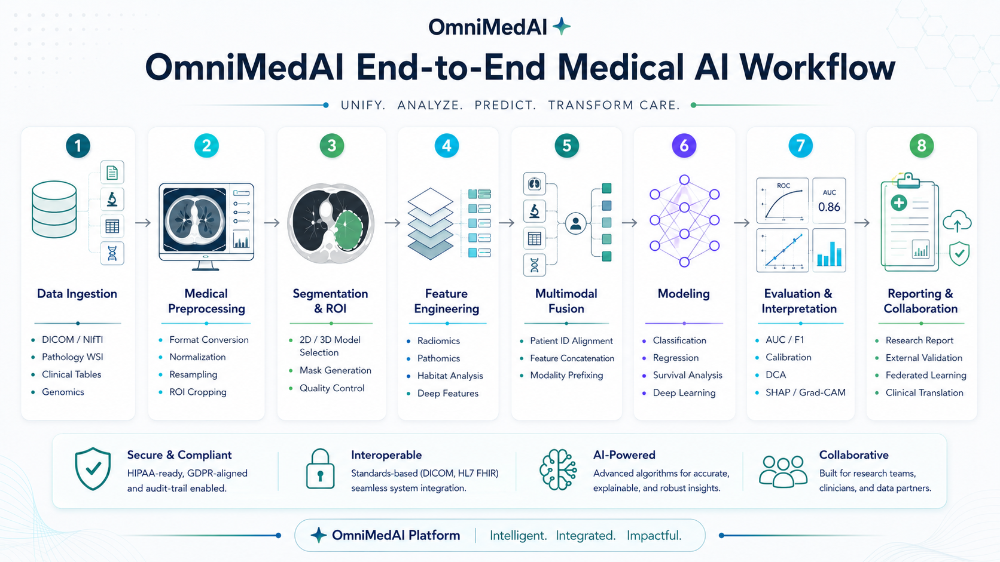

End-to-End Flow
OmniMedAI Platform Workflow
A complete medical AI workflow from data ingestion and preprocessing to modeling, interpretation, reporting, and multi-center collaboration.
Data ingestion to clinical translation
Designed for reproducible multimodal medical AI studies

Platform workflow visualization for the OmniMedAI end-to-end medical AI pipeline.